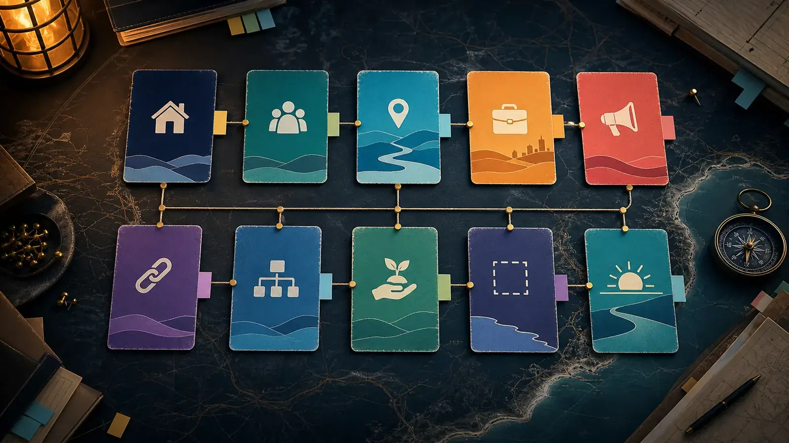

Whole site map
The trust hub, public workbenches and newer repo links in one place.
Use this page when you need to find the right door quickly: practical trust, 9 Ballow, jobs, media, repo links, grants, boundaries, or the optional deeper horizon.

Internal pages
Start with the page that matches the current question.
The trust hub is meant to be browseable, but not linear. The previous/next links give one sensible path; the site map lets people jump straight to what they need.
Public workbenches
The main external doors.
These are the most practical public pages to open from the trust hub.
Sole-trader support, community doorway and public proof layer.
MediaReady S.E.T. Hyperlocal MediaTraining, local story packaging and public-safe community signal.
Maker-spaceStraddie Maker-Space LabTool sharing, repair, reuse, compact sheds and material literacy.
FoodShared Table InitiativeGardens, pantries, meals, preserving and local food resilience.
GrantsStradbroke Grants LabGrant profiles, watchlists, evidence and public/private readiness.
SourcesLegal Memory WorkbenchOfficial source trails and legal-information preparation. Not legal advice.
Newer repo family
Atlas-informed links to keep on the radar.
The Aura Systems Image Atlas is still in development. These links are included because they are already relevant to trust, place, media, culture, resilience, maker-spaces, mutuals or the optional horizon.
Nearby sand sport, screen culture, markets and youth crew pathway.
Digital twinStraddie Digital Twin BuildersPlace-based mapping, modelling and public evidence capability.
EventsQuandamooka Country Events EngineSource-backed public event visibility and local calendar context.
FilmQuandamooka Film FestivalStory, film club and documentary-builder pathways.
MutualsMoreton Bay Community Wealth and MutualsCommunity wealth, mutual care and co-op-adjacent framing.
HorizonCivilisation of SandSand, infrastructure, materials, digital twins and larger civic imagination.